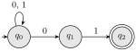
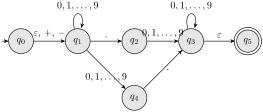

In this section we have learned that NFA are much like DFA, but with more flexibility about the transitions. Recall that DFA are required to have a transition function with the signature \(Q \times \Sigma \to Q\text{.}\) The definition of function means that there is thus exactly one outbound transition for each symbol and state.
With an NFA, this restriction is removed. A given state and symbol may yield 0, 1, or many outbound transitions. When there are 0, the computation can go no further, but when there are many, the automaton follows them all to their ends, by the mechanism of the redesigned transition function.
The transition function for NFA has a different signature. It is a function \(\delta \colon Q \times \Sigma \to 2^Q\text{,}\) where as before the exponentiated set is a power set. The meaning is simple: the value of \(\delta(q, a)\) is the set of states that can be reached from \(q\) by following edges labeled \(a\). That’s it!
Activity2.3.1.
Consider the following NFA:

Figure2.3.1.An NFA that accepts all words ending in \({\tt 01}\text{.}\)
Evidently it accepts all words ending in \(01\text{.}\) Give its formal components \(Q\text{,}\)\(\Sigma\text{,}\)\(q_0\text{,}\)\(F\text{,}\) and \(\delta\text{.}\)
Notice how the table looks quite similar to those of Section 2.2. The only difference is that the function values are sets of states rather than individual states.
We defined the language \(L(M)\) of a DFA \(M\) using the extended transition function (defined in Definition 2.2.2) as follows:
\begin{equation*}
L(M) = \{ x \in \aster{\Sigma} : \hat{\delta}(s, x) \in F \}\text{,}
\end{equation*}
where \(s\) is the start state of \(M\) and \(F\) is the set of accepting states. In order to define such a thing for NFA, we will probably need such an extended version of its transition function. This is also provided for us.
We defined the extended transition function \(\hat{\delta}\) as follows.
Definition2.3.2.
The extended transition function of an NFA \(M = (Q, \Sigma, s, F, \delta)\) is defined as follows. For any state \(q\) and word \(w \in \aster{\Sigma}\text{,}\)
To interpret this we must know what the states \(p_1\text{,}\)\(p_2, \ldots p_k\) are. These are all the states we can reach by following the symbols in the prefix \(x\) from the state \(q\text{.}\) Remember, this is a recursive/inductive definition, so we learn how to do an \(n\)-symbol word from how to do an \((n-1)\)-symbol one. The second case in the definition says, follow the \(a\)-transitions from every state \(p_i\text{,}\)\(i = 1\text{,}\)\(2, \ldots, k\text{,}\) and the states you get in this way are all members of \(\hat{\delta}(q, w)\text{.}\)
Example2.3.3.
Let us compute \(\hat{\delta}(q_0, {\tt 00101})\) using the inductive definition. It is not so easy to do the computation in the intuitive way, starting with the long string and working down to the empty string. The reason is simple: we don’t know the \(p_i\text{!}\) But, we know from experience by now that we will end up evaluating \(\hat{\delta}(q_0, x)\) for every prefix \(x\) of \({\tt 00101}\text{.}\) It will make our job simpler if we start with \(\varepsilon\) and work up from there.
\(\hat{\delta}(q_0, \varepsilon) = \{q_0\}\text{,}\) by definition. Since we can only reach the single state \(q_0\) “so far”, it is the only \(p_i\) for the next step.
\(\hat{\delta}(q_0, 0) = \delta(q_0, 0) = \{ q_0, q_1 \}\text{.}\) Here there is only one \(p_i\)—\(q_0\) from above—and only one symbol, so the union is just the set \(\{q_0, q_1\}\text{.}\) These are the \(p_i\) for the next step.
\(\hat{\delta}(q_0, 00) = \delta(q_0, 0) \cup \delta(q_1, 0) =
\{ q_0, q_1 \} \cup \varnothing = \{ q_0, q_1 \}\text{.}\) Here there are two states \(p_1\) and \(p_2\text{,}\) so two things in the union, but one of them is empty and we get nothing new yet.
\(\hat{\delta}(q_0, 001) = \delta(q_0, 1) \cup \delta(q_1, 1) =
\{ q_0 \} \cup \{ q_2 \} = \{ q_0 , q_2 \}.\) This time, both things in the union are nonempty.
Later we will see that this means the word \({\tt 00101}\) is accepted by this machine, because \(\hat{\delta}(q_0, 00101)\) contains a state of \(F\text{.}\)
Equipped with the extended transition function, we can define the language of an NFA.
Definition2.3.4.
If \(M\) is our NFA, we define
\begin{equation*}
L(M) = \{ w \in \aster{\Sigma}: \hat{\delta}(q_0, w) \cap F \ne \varnothing \}\text{.}
\end{equation*}
Example2.3.5.
Let us prove that \(M\text{,}\) the NFA of Figure 2.3.1, accepts the language \(L = \{ w : w = y01 \}\text{.}\) That is, we wish to prove that
Make sure you see why the defining property \(\hat{\delta}(q_0, w) \cap F \ne \varnothing\) from Definition 2.3.4 becomes \(q_2 \in \hat{\delta}(q_0, w)\) with our choice of \(M\text{.}\)
We will use induction, but of the “mutual” variety. Here are the three statements we will prove by induction:
\(\hat{\delta}(q_0, w)\) contains \(q_0\) for every word \(w\text{.}\)
\(\hat{\delta}(q_0, w)\) contains \(q_1\) if and only if \(w\) ends in \(0\text{.}\)
\(\hat{\delta}(q_0, w)\) contains \(q_2\) if and only if \(w\) ends in \(01\text{.}\)
Observe before continuing that only statement 3 is really required by the theorem, but to make the induction go, we need to assume something about the other states too. This is typical of inductive proofs for DFA and NFA.
The induction begins with a base case, \(\abs{w} = 0\text{.}\) We verify the three statements. All are obvious, since \(\varepsilon\) doesn’t end in anything and \(\hat{\delta}(q_0, \varepsilon) = \{q_0\}\) by Definition 2.3.2.
Next let us proceed to the inductive step. Consider a word \(w = xa\) (remember that \(x \in \aster{\Sigma}\) and \(a \in \Sigma\)). Then the length of \(w\) is one more than the length of \(x\text{.}\) In symbols, \(\abs{w} = \abs{x} + 1\text{.}\) We will assume that all three statements are true of the shorter word \(x\text{,}\) and deduce them for the longer word \(w\text{.}\)
To see that statement 1 holds for \(w\text{,}\) we observe that by the induction hypothesis, \(q_0 \in \hat{\delta}(q_0, x)\text{.}\) Since \(w = x0\) or \(w = x1\text{,}\) and there are loop transitions from \(q_0\) labeled with both \(0\) and \(1\text{,}\) we see that \(q_0 \in \hat{\delta}(q_0, w)\text{,}\) as required.
For statement 2, we need to prove both “directions” of the “if and only if” statement. It is a bit confusing if you have not seen it before. We say “\(P\) if and only if \(Q\)” when we wish to assert simultaneously that \(P \implies Q\) and \(Q \implies P\text{.}\) The “forward” implication is \(P \implies Q\text{,}\) which confusingly is the “only if” part of the proof. The “reverse” implication is \(Q \implies P\text{,}\) which is the “if” part. In this case, the forward implication is
\begin{equation*}
q_1 \in \hat{\delta}(q_0, w) \implies w \text{ ends in } 0
\end{equation*}
and the reverse implication is
\begin{equation*}
w \text{ ends in } 0 \implies q_1 \in \hat{\delta}(q_0, w)\text{.}
\end{equation*}
To prove the forward implication, we observe that only \(q_0\) has a transition to \(q_1\text{,}\) and that transition is labeled \(0\text{.}\) So the last letter of \(w\) must be \(0\text{.}\) For the reverse implication, suppose that \(w\) ends in \(0\text{.}\) Because we have assumed statement 1 for the prefix \(x\text{,}\) we know that \(\hat{\delta}(q_0, x) \ni q_1\text{.}\) Because there is a transition from \(q_0\) to \(q_1\) labeled \(0\text{,}\) it follows that
Recall that there are a few differences between DFA and NFA:
DFA must have exactly one outbound transition from each state with each symbol, but NFA may have zero, one, or many such transitions.
The transition function for DFA looks like \(\delta \colon Q \times \Sigma \to Q\text{,}\) but for NFA, it looks like \(\delta \colon Q \times \Sigma \to 2^{Q}\text{.}\)
It may seem that NFA are more powerful than DFA, but if you think back, we’ve given DFA to recognize every language we’ve seen an NFA for. The NFA are sometimes easier to read, very often easier to write, and in nice cases they are smaller than the DFA. But, as we’ll see below, they aren’t more powerful.
Theorem2.3.6.
Let \(M\) be an NFA. Then \(L(M)\) is regular, that is, there is a DFA \(M'\) such that \(L(M) = L(M')\text{.}\)
For the proof of Theorem 2.3.6, see the proof of Theorem 2.11 in HMU.
Subsection2.3.3Pseudo-NFA
In this section we introduce the concept of a pseudo-NFA, which is a machine that is almost an NFA, but not quite. The difference is that a pseudo-NFA may have more than one start state. This is not allowed for NFA according to HMU, but it is allowed for pseudo-NFA.
We introduce pseudo-NFA in part to show that they are just as sensible as NFA (indeed some authors only consider pseudo-NFA). In particular, we show in Theorem 2.3.11 that the subset construction may be applied to a pseudo-NFA to produce a DFA that accepts the same language. This means that, to show a language is regular, it is enough to give a pseudo-NFA that accepts it. It also means that even pseudo-NFA are still not more computationally powerful than DFA.
Definition2.3.7.
A pseudo-NFA is a 5-tuple \(M = (Q, \Sigma, S, F, \delta)\text{,}\) where \(Q\text{,}\)\(\Sigma\text{,}\) and \(F\) are the same as for an NFA, but \(S\) is a set of start states, and \(\delta\) is a function \(\delta \colon Q \times \Sigma \to 2^Q\text{.}\)
We can extend the definition of \(\hat{\delta}\) to pseudo-NFA in a nice way. We need to be able to cope with a whole set of start states. The idea of \(\hat{\delta}\) is that it gives the set of possible “next positions”. If \(U\) is a set of states, we can define
capturing this idea. If we apply it to a proper NFA rather than a pseudo-NFA, we obtain almost the same function as before, except that it operates on singleton sets rather than individual states.
\begin{equation*}
L(M) = \{ w \in \aster{\Sigma} : \hat{\delta}(S, w) \cap F \ne \varnothing \}\text{.}
\end{equation*}
Lemma2.3.10.
If \(M\) is an NFA, then the two definitions of \(L(M)\) are equivalent.
Theorem2.3.11.
Let \(M\) be a pseudo-NFA. Then there is a DFA \(M'\) such that \(L(M) = L(M')\text{.}\)
Proof.
The proof is the same as that of Theorem 2.3.6, except that we use the extended transition function \(\hat{\delta}\) defined in Definition 2.3.8 rather than the one defined in Definition 2.2.2. The proof is left as an exercise.
The pseudo-NFA are convenient for proving results like the following.
Theorem2.3.12.
If \(B_1\) and \(B_2\) are regular languages, then so is \(B_1 \cup B_2\text{.}\)
Proof.
Since \(B_1\) and \(B_2\) are regular, there are DFA \(M_1\) and \(M_2\) such that \(L(M_1) = B_1\) and \(L(M_2) = B_2\text{.}\) We will construct a DFA \(M\) such that \(L(M) = B_1 \cup B_2\text{.}\) Let the state sets and transition functions of \(M_1\) and \(M_2\) be \(Q_1\text{,}\)\(\delta_1\) and \(Q_2\text{,}\)\(\delta_2\text{,}\) respectively. Without loss of generality, we may assume that \(Q_1\) and \(Q_2\) are disjoint. If they are not, we can rename the states of one of them.
The state set \(Q = Q_1 \cup Q_2\) of \(M\) will be the union of the states of \(M_1\) and \(M_2\text{.}\) Both the start states of \(M_1\) and \(M_2\) will be start states of \(M\text{.}\) The accepting states of \(M\) will be the union of the accepting states of \(M_1\) and \(M_2\text{.}\) The transition function of \(M\) will be defined by
\begin{equation*}
\delta(q, a) = \begin{cases}
\delta_1(q, a) \amp \text{if $q \in Q_1$} \\
\delta_2(q, a) \amp \text{if $q \in Q_2$.} \\
\end{cases}
\end{equation*}
First, we observe that \(L(M) = L(M_1) \cup L(M_2) = B_1 \cup B_2\text{.}\) To see this, first note that \(L(M_1) \subseteq L(M)\) and \(L(M_2) \subseteq L(M)\text{.}\) Therefore \(L(M_1) \cup L(M_2) \subseteq L(M)\text{.}\) To see the reverse inclusion, let \(w \in L(M)\text{.}\) Then \(w \in L(M_1)\) or \(w \in L(M_2)\text{.}\) This shows that the \(L(M) = L(M_1) \cup L(M_2)\text{,}\) as required.
It is evident that \(M\) so constructed is a pseudo-NFA. By Theorem 2.3.11, there is a DFA \(M'\) such that \(L(M) = L(M')\text{.}\) But \(L(M) = B_1 \cup B_2\text{,}\) so we are done.
Subsection2.3.4Class Activities
Activity2.3.2.
Design NFA to recognize the following sets of keywords. Draw pictures on the whiteboard.
\({\tt abc}\text{,}\)\({\tt abd}\text{,}\) and \({\tt aacd}\text{.}\) Assume the alphabet is \(\{a, b, c, d\}\text{.}\)
\(0101\text{,}\)\(101\text{,}\) and \(011\text{.}\)
\({\tt ab}\text{,}\)\({\tt bc}\text{,}\) and \({\tt ca}\text{.}\) Assume the alphabet is \(\{a, b, c\}\text{.}\)
Activity2.3.3.
Convert each of your NFA from Activity 2.3.2 to a DFA using the subset construction. Draw pictures on the whiteboard.
Subsection2.3.5NFA with \(\varepsilon\)-transitions
In this section we introduce a new kind of NFA, which is allowed to have \(\varepsilon\)-transitions. These are transitions that can be taken without consuming any input. The purpose of such transitions is to allow the machine to “jump” from one place to another regardless of what symbol is next in the input. This is useful for making the machine smaller and easier to read. Like nondeterminism itself, \(\varepsilon\)-transitions do not increase the computational power of the machine.
In our transition diagrams, all we need to do is add a new kind of arrow, labeled with \(\varepsilon\text{.}\) In the transition tables, we write a new column for \(\varepsilon\) and specify all \(\varepsilon\)-transitions in that column.
Example2.3.13.
Consider the \(\varepsilon\)-NFA shown below.

Figure2.3.14.An NFA with \(\varepsilon\)-transitions.
This NFA accepts the language of possibly signed decimal numbers, including integers and numbers with a decimal point. The numbers don’t have to have a sign, so there is an \(\varepsilon\)-transition from \(q_0\) to \(q_1\text{.}\) Similarly, it is cleaner to have an \(\varepsilon\)-transition from \(q_3\) to \(q_5\) to end the input than another transition with the same \(0, 1, \ldots, 9\) label.
The transition table for this machine is shown below.
\(\varepsilon\)
\(+\)
\(-\)
\(0, 1, \ldots, 9\)
\(.\)
\(q_0\)
\(\{q_1\}\)
\(\{q_1\}\)
\(\{q_1\}\)
\(\varnothing\)
\(\varnothing\)
\(q_1\)
\(\varnothing\)
\(\varnothing\)
\(\varnothing\)
\(\{q_1,q_4\}\)
\(\{q_2\}\)
\(q_2\)
\(\varnothing\)
\(\varnothing\)
\(\varnothing\)
\(\{q_3\}\)
\(\varnothing\)
\(q_3\)
\(\{q_5\}\)
\(\varnothing\)
\(\varnothing\)
\(\{q_3\}\)
\(\varnothing\)
\(q_4\)
\(\varnothing\)
\(\varnothing\)
\(\varnothing\)
\(\varnothing\)
\(\{q_3\}\)
\(q_5\)
\(\varnothing\)
\(\varnothing\)
\(\varnothing\)
\(\varnothing\)
\(\varnothing\)
We need a formal mechanism to describe the acceptance of words by the \(\varepsilon\)-NFA. The idea is that the machine can take any number of \(\varepsilon\)-transitions whenever they are allowed, possibly in sequence, before it must read the next symbol of the input. This is captured by the definition of \(\varepsilon\)-closure below.
Definition2.3.15.
Let \(q\) be a state in an \(\varepsilon\)-NFA. The \(\varepsilon\)-closure of \(q\text{,}\) written \(\textrm{eclose}(q)\text{,}\) is a set of states in the NFA defined inductively as follows.
The state \(q\) is in \(\textrm{eclose}(q)\text{.}\)
If state \(p\) is in \(\textrm{eclose}(q)\text{,}\) and there is an \(\varepsilon\)-transition from \(p\) to \(r\text{,}\) then \(r\) is in \(\textrm{eclose}(q)\text{.}\)
The \(\varepsilon\)-closure of a set of states is needed in order that we may define the extended transition function of a \(\varepsilon\)-NFA. The definition follows.
Definition2.3.16.
Let \(M\) be an \(\varepsilon\)-NFA. Then the extended transition function of \(M\text{,}\) written \(\hat{\delta}\text{,}\) is a function \(\hat{\delta} \colon Q \times \aster{\Sigma} \to 2^Q\) defined as follows.
\(\hat{\delta}(q, \varepsilon) = \textrm{eclose}(q)\) for each state \(q\text{.}\)
\(\hat{\delta}(q, xa)\) is defined as follows. First let \(p_1, \ldots, p_k\) be the members of the set \(\hat{\delta}(q, x)\text{.}\) Then let \(r_1, \ldots, r_m\) be the members of the set
Like ordinary and pseudo-NFA, \(\varepsilon\)-NFA can be converted to DFA using a jazzed-up subset construction. The idea is to incorporate \(\varepsilon\)-closure into construction. The details may be found in HMU section 2.5.5.
Activity2.3.4.
Consider the following \(\varepsilon\)-NFA.
\(\varepsilon\)
\(a\)
\(b\)
\(c\)
\(\to p\)
\(\varnothing\)
\(\{p\}\)
\(\{q\}\)
\(\{r\}\)
\(q\)
\(\{p\}\)
\(\{q\}\)
\(\{r\}\)
\(\varnothing\)
\(\ast r\)
\(\{q\}\)
\(\{r\}\)
\(\varnothing\)
\(\{p\}\)
Compute the \(\varepsilon\)-closure of each state.
Give all the strings of length 3 or less computed by the automaton.
A relevant video.
It probably doesn’t belong here, but let’s put it here anyway. I intended to show this video in class after we practiced the subset construction, but there wasn’t time.
Figure2.3.17.Professor Brailsford explains the Chomsky hierarchy.